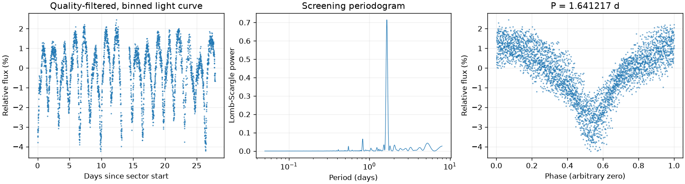
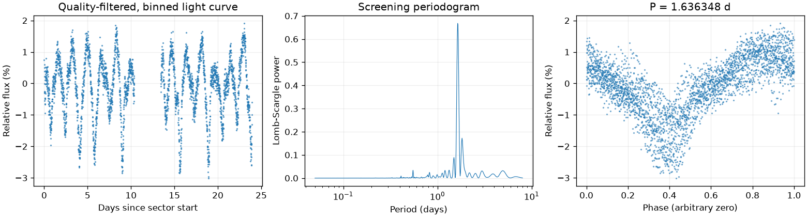
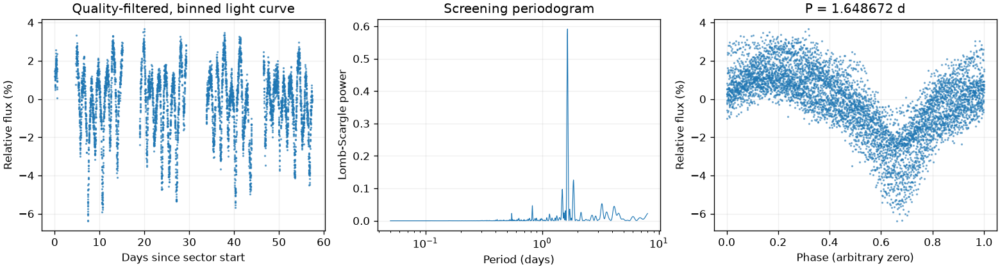
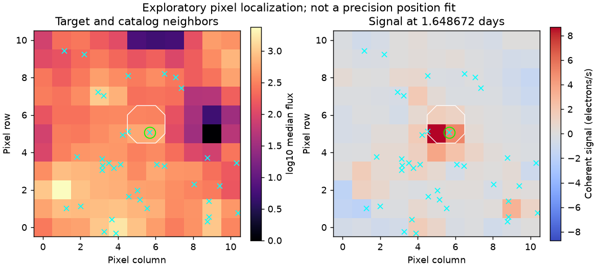

Sector 1 · LS 1.641217 天
BLS 辅助周期：1.644415 天
两种搜索得到相近周期；1% 比较容差不是周期误差。
前半段 LS：1.646925 天；后半段 LS：1.650607 天。
相对幅度估计 3.6118% · 有效点数 18277

Screening peak only; no correlated-noise false-alarm calibration or physical classification.
这是筛选报告，未确认新发现，也不能代替 VSX 提交材料。
图中依次为亮度随时间变化、候选周期强度和折叠后的重复形状。相位零点仅供展示；纵轴是相对通量，不是标定星等。
BLS 辅助周期：1.644415 天
两种搜索得到相近周期；1% 比较容差不是周期误差。
前半段 LS：1.646925 天；后半段 LS：1.650607 天。
相对幅度估计 3.6118% · 有效点数 18277

Screening peak only; no correlated-noise false-alarm calibration or physical classification.
BLS 辅助周期：1.647758 天
两种搜索得到相近周期；1% 比较容差不是周期误差。
前半段 LS：1.679773 天；后半段 LS：1.630559 天。
相对幅度估计 2.3406% · 有效点数 15004

Screening peak only; no correlated-noise false-alarm calibration or physical classification.
BLS 辅助周期：1.647758 天
两种搜索得到相近周期；1% 比较容差不是周期误差。
前半段 LS：1.654504 天；后半段 LS：1.654409 天。
相对幅度估计 3.8151% · 有效点数 28987

Screening peak only; no correlated-noise false-alarm calibration or physical classification.

像素峰值诊断不能替代精细来源拟合或正式查找星图。
{
"ra_deg": 80.5158135788712,
"dec_deg": -67.9246828348873,
"catalog_queries": [
{
"source": "VSX",
"checked_at": "2026-11-10T08:42:10.967893+00:00",
"url": "https://vsx.aavso.org/index.php",
"query": {
"params": {
"view": "api.list",
"ra": 80.5158135788712,
"dec": -67.9246828348873,
"radius": 0.04,
"format": "json"
}
},
"status": "completed",
"match_count": 39,
"note": "VSX neighborhood only; no-match is not novelty confirmation."
},
{
"source": "SIMBAD/VizieR/ADS",
"status": "not_run",
"note": "Requires detailed catalog/literature review; VSX alone is insufficient."
}
],
"vsx_neighbors": [
{
"Name": "Gaia DR3 4658742509079083264",
"RA2000": "80.43918",
"Declination2000": "-67.90193",
"ProperMotionRA": "1.6340",
"ProperMotionDec": "0.5450",
"VariabilityType": "BE|GCAS|SDOR|WR",
"MaxMag": "17.26 G",
"MinMag": "17.37 G",
"SpectralType": "B",
"Discoverer": "Gaia collaboration",
"Category": "Variable",
"OID": "4245867",
"Constellation": "Dor",
"sep_arcsec": 132.17398204792352
},
{
"Name": "Gaia DR3 4658741237769035264",
"RA2000": "80.45383",
"Declination2000": "-67.95085",
"ProperMotionRA": "1.6860",
"ProperMotionDec": "0.2020",
"VariabilityType": "BE|GCAS|SDOR|WR",
"MaxMag": "17.00 G",
"MinMag": "17.09 G",
"SpectralType": "B",
"Discoverer": "Gaia collaboration",
"Category": "Variable",
"OID": "4246153",
"Constellation": "Dor",
"sep_arcsec": 126.09077044900054
},
{
"Name": "Gaia DR3 4658741753164845568",
"RA2000": "80.45586",
"Declination2000": "-67.90231",
"ProperMotionRA": "1.7440",
"ProperMotionDec": "0.2190",
"VariabilityType": "BE|GCAS|SDOR|WR",
"MaxMag": "14.56 G",
"MinMag": "14.89 G",
"SpectralType": "B",
"Discoverer": "Gaia collaboration",
"Category": "Variable",
"OID": "4246191",
"Constellation": "Dor",
"sep_arcsec": 114.33761899674468
},
{
"Name": "Gaia DR3 4658741615705820544",
"RA2000": "80.45812",
"Declination2000": "-67.93447",
"ProperMotionRA": "1.7540",
"ProperMotionDec": "0.3960",
"VariabilityType": "BE|GCAS|SDOR|WR",
"MaxMag": "14.86 G",
"MinMag": "15.39 G",
"SpectralType": "B",
"Discoverer": "Gaia collaboration",
"Category": "Variable",
"OID": "4246233",
"Constellation": "Dor",
"sep_arcsec": 85.62626777124156
},
{
"Name": "Gaia DR3 4658741237768809344",
"RA2000": "80.46513",
"Declination2000": "-67.94984",
"ProperMotionRA": "1.7270",
"ProperMotionDec": "0.3340",
"VariabilityType": "BE|GCAS|SDOR|WR",
"MaxMag": "16.35 G",
"MinMag": "16.43 G",
"SpectralType": "B",
"Discoverer": "Gaia collaboration",
"Category": "Variable",
"OID": "4246368",
"Constellation": "Dor",
"sep_arcsec": 113.57543573840336
},
{
"Name": "Gaia DR3 4658741753164862336",
"RA2000": "80.47002",
"Declination2000": "-67.91378",
"ProperMotionRA": "1.6450",
"ProperMotionDec": "0.2120",
"VariabilityType": "BE|GCAS|SDOR|WR",
"MaxMag": "14.87 G",
"MinMag": "14.98 G",
"SpectralType": "O",
"Discoverer": "Gaia collaboration",
"Category": "Variable",
"OID": "4246458",
"Constellation": "Dor",
"sep_arcsec": 73.35593395442027
},
{
"Name": "Gaia DR3 4658741748843205888",
"RA2000": "80.47527",
"Declination2000": "-67.91469",
"ProperMotionRA": "1.8050",
"ProperMotionDec": "0.2960",
"VariabilityType": "BE|GCAS|SDOR|WR",
"MaxMag": "11.85 G",
"MinMag": "11.95 G",
"SpectralType": "B",
"Discoverer": "Gaia collaboration",
"Category": "Variable",
"OID": "4246563",
"Constellation": "Dor",
"sep_arcsec": 65.60813175823313
},
{
"Name": "Gaia DR3 4658741611407759104",
"RA2000": "80.47896",
"Declination2000": "-67.93445",
"ProperMotionRA": "1.6430",
"ProperMotionDec": "0.3440",
"VariabilityType": "BE|GCAS|SDOR|WR",
"MaxMag": "15.52 G",
"MinMag": "15.59 G",
"SpectralType": "B",
"Discoverer": "Gaia collaboration",
"Category": "Variable",
"OID": "4246612",
"Constellation": "Dor",
"sep_arcsec": 61.004143395100876
},
{
"Name": "Gaia DR3 4658741611443452288",
"RA2000": "80.47984",
"Declination2000": "-67.93795",
"ProperMotionRA": "1.3930",
"ProperMotionDec": "0.3650",
"VariabilityType": "E",
"Period": "0.94089",
"EclipseDuration": "20.0",
"MaxMag": "16.88 G",
"MinMag": "17.41 G",
"SpectralType": "B",
"Discoverer": "Gaia collaboration",
"Category": "Variable",
"OID": "4246626",
"Constellation": "Dor",
"sep_arcsec": 68.18152598710248
},
{
"Name": "Gaia DR3 4658741615725930496",
"RA2000": "80.47993",
"Declination2000": "-67.93642",
"ProperMotionRA": "1.4260",
"ProperMotionDec": "0.5850",
"VariabilityType": "E",
"Period": "0.87129",
"MaxMag": "14.68 G",
"MinMag": "15.37 G",
"SpectralType": "B",
"Discoverer": "Gaia collaboration",
"Category": "Variable",
"OID": "4246628",
"Constellation": "Dor",
"sep_arcsec": 64.35245370049094
},
{
"Name": "Gaia DR3 4658741547006455808",
"RA2000": "80.48505",
"Declination2000": "-67.93545",
"ProperMotionRA": "2.0490",
"ProperMotionDec": "0.5370",
"VariabilityType": "L",
"MaxMag": "17.31 G",
"MinMag": "17.46 G",
"SpectralType": "M",
"Discoverer": "Gaia collaboration",
"Category": "Variable",
"OID": "4246723",
"Constellation": "Dor",
"sep_arcsec": 56.868991035975014
},
{
"Name": "Gaia DR3 4658741169049560704",
"RA2000": "80.48687",
"Declination2000": "-67.95700",
"ProperMotionRA": "1.6650",
"ProperMotionDec": "-0.3550",
"VariabilityType": "E",
"Period": "1.35605",
"MaxMag": "17.94 G",
"MinMag": "18.20 G",
"Discoverer": "Gaia collaboration",
"Category": "Variable",
"OID": "4246753",
"Constellation": "Dor",
"sep_arcsec": 122.7467731368078
},
{
"Name": "Gaia DR3 4658741546986394752",
"RA2000": "80.48935",
"Declination2000": "-67.93688",
"ProperMotionRA": "1.7260",
"ProperMotionDec": "0.0950",
"VariabilityType": "E",
"Period": "2.32925",
"MaxMag": "15.76 G",
"MinMag": "16.02 G",
"SpectralType": "O",
"Discoverer": "Gaia collaboration",
"Category": "Variable",
"OID": "4246801",
"Constellation": "Dor",
"sep_arcsec": 56.65116718505206
},
{
"Name": "Gaia DR3 4658741169049351424",
"RA2000": "80.49217",
"Declination2000": "-67.95297",
"ProperMotionRA": "1.3940",
"ProperMotionDec": "0.4400",
"VariabilityType": "E",
"Period": "0.59203",
"MaxMag": "16.66 G",
"MinMag": "16.79 G",
"SpectralType": "O",
"Discoverer": "Gaia collaboration",
"Category": "Variable",
"OID": "4246855",
"Constellation": "Dor",
"sep_arcsec": 106.73413619167067
},
{
"Name": "Gaia DR3 4658741787524609152",
"RA2000": "80.49350",
"Declination2000": "-67.90777",
"ProperMotionRA": "1.4710",
"ProperMotionDec": "0.5300",
"VariabilityType": "VAR",
"Period": "0.0439662",
"MaxMag": "14.09 G",
"MinMag": "14.14 G",
"SpectralType": "B",
"Discoverer": "Gaia collaboration",
"Category": "Variable",
"OID": "4246888",
"Constellation": "Dor",
"sep_arcsec": 67.96474002801544
},
{
"Name": "ASASSN-V J052158.53-675534.9",
"RA2000": "80.49389",
"Declination2000": "-67.92636",
"VariabilityType": "DCEPS",
"Period": "1.6484",
"Epoch": "2458005.799",
"MaxMag": "13.67 V",
"MinMag": "13.77 V",
"Category": "Variable",
"OID": "840541",
"Constellation": "Dor",
"sep_arcsec": 30.269172220721366
},
{
"Name": "Gaia DR3 4658741581366199680",
"RA2000": "80.49451",
"Declination2000": "-67.93566",
"ProperMotionRA": "2.1690",
"ProperMotionDec": "0.1190",
"VariabilityType": "RRAB",
"Period": "0.65121",
"MaxMag": "19.07 G",
"MinMag": "19.41 G",
"Discoverer": "Gaia collaboration",
"Category": "Variable",
"OID": "10634881",
"Constellation": "Dor",
"sep_arcsec": 48.90843722838602
},
{
"Name": "Gaia DR3 4658741164766845952",
"RA2000": "80.49581",
"Declination2000": "-67.95950",
"ProperMotionRA": "0.6150",
"ProperMotionDec": "-0.1040",
"VariabilityType": "E",
"Period": "0.220501",
"EclipseDuration": "9.0",
"MaxMag": "14.93 G",
"MinMag": "15.24 G",
"SpectralType": "O",
"Discoverer": "Gaia collaboration",
"Category": "Variable",
"OID": "4246926",
"Constellation": "Dor",
"sep_arcsec": 128.22613358188644
},
{
"Name": "Gaia DR3 4658741169049561216",
"RA2000": "80.49674",
"Declination2000": "-67.95719",
"ProperMotionRA": "1.4930",
"ProperMotionDec": "0.3640",
"VariabilityType": "BE|GCAS|SDOR|WR",
"MaxMag": "14.73 G",
"MinMag": "14.80 G",
"SpectralType": "O",
"Discoverer": "Gaia collaboration",
"Category": "Variable",
"OID": "4246941",
"Constellation": "Dor",
"sep_arcsec": 119.83344166185839
},
{
"Name": "Gaia DR3 4658741684445409408",
"RA2000": "80.49805",
"Declination2000": "-67.92498",
"ProperMotionRA": "1.5520",
"ProperMotionDec": "0.1970",
"VariabilityType": "BE|GCAS|SDOR|WR",
"MaxMag": "16.50 G",
"MinMag": "16.68 G",
"SpectralType": "O",
"Discoverer": "Gaia collaboration",
"Category": "Variable",
"OID": "4246971",
"Constellation": "Dor",
"sep_arcsec": 24.057238794128132
},
{
"Name": "Gaia DR3 4658741547006475776",
"RA2000": "80.50402",
"Declination2000": "-67.94529",
"ProperMotionRA": "1.7240",
"ProperMotionDec": "0.2750",
"VariabilityType": "E",
"Period": "1.22582",
"MaxMag": "15.58 G",
"MinMag": "15.87 G",
"SpectralType": "B",
"Discoverer": "Gaia collaboration",
"Category": "Variable",
"OID": "4247081",
"Constellation": "Dor",
"sep_arcsec": 75.8809051838125
},
{
"Name": "Gaia DR3 4658741547006478720",
"RA2000": "80.51093",
"Declination2000": "-67.94315",
"ProperMotionRA": "1.8330",
"ProperMotionDec": "0.1350",
"VariabilityType": "E",
"Period": "0.92963",
"EclipseDuration": "15.0",
"MaxMag": "16.80 G",
"MinMag": "17.00 G",
"SpectralType": "B",
"Discoverer": "Gaia collaboration",
"Category": "Variable",
"OID": "4247206",
"Constellation": "Dor",
"sep_arcsec": 66.80906520970807
},
{
"Name": "Gaia DR3 4658741547006483968",
"RA2000": "80.51347",
"Declination2000": "-67.94601",
"ProperMotionRA": "1.7260",
"ProperMotionDec": "0.2550",
"VariabilityType": "DSCT|GDOR|SXPHE",
"Period": "0.59862",
"MaxMag": "14.19 G",
"MinMag": "14.34 G",
"SpectralType": "B",
"Discoverer": "Gaia collaboration",
"Category": "Variable",
"OID": "4247266",
"Constellation": "Dor",
"sep_arcsec": 76.84318064298479
},
{
"Name": "Gaia DR3 4658741684445420032",
"RA2000": "80.51581",
"Declination2000": "-67.92468",
"ProperMotionRA": "1.8340",
"ProperMotionDec": "0.1360",
"VariabilityType": "BE|GCAS|SDOR|WR",
"MaxMag": "12.68 G",
"MinMag": "12.74 G",
"SpectralType": "B",
"Discoverer": "Gaia collaboration",
"Category": "Variable",
"OID": "4247303",
"Constellation": "Dor",
"sep_arcsec": 0.011296023780960125
},
{
"Name": "Gaia DR3 4658741542688292352",
"RA2000": "80.52022",
"Declination2000": "-67.94838",
"ProperMotionRA": "1.6680",
"ProperMotionDec": "0.3510",
"VariabilityType": "E",
"Period": "1.30482",
"MaxMag": "16.00 G",
"MinMag": "16.51 G",
"SpectralType": "B",
"Discoverer": "Gaia collaboration",
"Category": "Variable",
"OID": "4247404",
"Constellation": "Dor",
"sep_arcsec": 85.5176433140096
},
{
"Name": "Gaia DR3 4658743191993752320",
"RA2000": "80.52346",
"Declination2000": "-67.90593",
"ProperMotionRA": "1.4590",
"ProperMotionDec": "0.0760",
"VariabilityType": "E",
"Period": "6.813",
"EclipseDuration": "13.0",
"MaxMag": "18.94 G",
"MinMag": "19.35 G",
"Discoverer": "Gaia collaboration",
"Category": "Variable",
"OID": "4247462",
"Constellation": "Dor",
"sep_arcsec": 68.29891017665344
},
{
"Name": "Gaia DR3 4658741577110161536",
"RA2000": "80.52475",
"Declination2000": "-67.93451",
"ProperMotionRA": "1.5860",
"ProperMotionDec": "0.3890",
"VariabilityType": "BE|GCAS|SDOR|WR",
"MaxMag": "13.90 G",
"MinMag": "14.41 G",
"SpectralType": "O",
"Discoverer": "Gaia collaboration",
"Category": "Variable",
"OID": "4247489",
"Constellation": "Dor",
"sep_arcsec": 37.38598449175405
},
{
"Name": "Gaia DR3 4658741680162920832",
"RA2000": "80.53082",
"Declination2000": "-67.93470",
"ProperMotionRA": "1.8420",
"ProperMotionDec": "0.3010",
"VariabilityType": "E",
"Period": "0.216775",
"EclipseDuration": "14.0",
"MaxMag": "13.99 G",
"MinMag": "14.11 G",
"Discoverer": "Gaia collaboration",
"Category": "Variable",
"OID": "4247604",
"Constellation": "Dor",
"sep_arcsec": 41.38232644359787
},
{
"Name": "Gaia DR3 4658743196273905536",
"RA2000": "80.53269",
"Declination2000": "-67.90672",
"ProperMotionRA": "1.7430",
"ProperMotionDec": "0.2400",
"VariabilityType": "SR|M",
"Period": "352.1",
"MaxMag": "15.54 G",
"MinMag": "15.84 G",
"SpectralType": "M",
"Discoverer": "Gaia collaboration",
"Category": "Variable",
"OID": "4247640",
"Constellation": "Dor",
"sep_arcsec": 68.58192609341235
},
{
"Name": "Gaia DR3 4658743191991745792",
"RA2000": "80.53825",
"Declination2000": "-67.90987",
"ProperMotionRA": "2.8560",
"ProperMotionDec": "-0.4330",
"VariabilityType": "RRAB",
"Period": "0.63222",
"MaxMag": "19.90 G",
"MinMag": "20.59 G",
"Discoverer": "Gaia collaboration",
"Category": "Variable",
"OID": "8737247",
"Constellation": "Dor",
"sep_arcsec": 61.36568158288061
},
{
"Name": "Gaia DR3 4658741478287037312",
"RA2000": "80.55683",
"Declination2000": "-67.93951",
"ProperMotionRA": "1.6670",
"ProperMotionDec": "0.2300",
"VariabilityType": "E",
"Period": "1.08176",
"MaxMag": "14.85 G",
"MinMag": "15.08 G",
"SpectralType": "B",
"Discoverer": "Gaia collaboration",
"Category": "Variable",
"OID": "4248102",
"Constellation": "Dor",
"sep_arcsec": 76.98576278979422
},
{
"Name": "Gaia DR3 4658741508326627584",
"RA2000": "80.56580",
"Declination2000": "-67.93083",
"ProperMotionRA": "1.6510",
"ProperMotionDec": "0.3490",
"VariabilityType": "E",
"Period": "1.50984",
"EclipseDuration": "15.0",
"MaxMag": "16.17 G",
"MinMag": "16.44 G",
"SpectralType": "B",
"Discoverer": "Gaia collaboration",
"Category": "Variable",
"OID": "4248304",
"Constellation": "Dor",
"sep_arcsec": 71.15021993538205
},
{
"Name": "Gaia DR3 4658741478287053184",
"RA2000": "80.57044",
"Declination2000": "-67.94426",
"ProperMotionRA": "1.6180",
"ProperMotionDec": "0.0630",
"VariabilityType": "E",
"Period": "1.79705",
"EclipseDuration": "13.0",
"MaxMag": "14.46 G",
"MinMag": "14.61 G",
"SpectralType": "B",
"Discoverer": "Gaia collaboration",
"Category": "Variable",
"OID": "4248417",
"Constellation": "Dor",
"sep_arcsec": 102.10239091555545
},
{
"Name": "Gaia DR3 4658741375187880832",
"RA2000": "80.57119",
"Declination2000": "-67.95069",
"ProperMotionRA": "2.1560",
"ProperMotionDec": "0.1900",
"VariabilityType": "E",
"Period": "0.78031",
"EclipseDuration": "11.0",
"MaxMag": "16.83 G",
"MinMag": "16.97 G",
"SpectralType": "O",
"Discoverer": "Gaia collaboration",
"Category": "Variable",
"OID": "4248435",
"Constellation": "Dor",
"sep_arcsec": 119.88707126942967
},
{
"Name": "Gaia DR3 4658741370886084992",
"RA2000": "80.57186",
"Declination2000": "-67.94916",
"ProperMotionRA": "1.8460",
"ProperMotionDec": "0.2360",
"VariabilityType": "DSCT|GDOR|SXPHE",
"Period": "0.0748268",
"MaxMag": "11.99 G",
"MinMag": "12.05 G",
"SpectralType": "B",
"Discoverer": "Gaia collaboration",
"Category": "Variable",
"OID": "4248455",
"Constellation": "Dor",
"sep_arcsec": 116.22713477546729
},
{
"Name": "Gaia DR3 4658741409567577344",
"RA2000": "80.57802",
"Declination2000": "-67.93922",
"ProperMotionRA": "1.6390",
"ProperMotionDec": "0.2850",
"VariabilityType": "BE|GCAS|SDOR|WR",
"MaxMag": "15.04 G",
"MinMag": "15.14 G",
"SpectralType": "O",
"Discoverer": "Gaia collaboration",
"Category": "Variable",
"OID": "4248554",
"Constellation": "Dor",
"sep_arcsec": 99.0852078630373
},
{
"Name": "Gaia DR3 4658741443927317376",
"RA2000": "80.58992",
"Declination2000": "-67.93148",
"ProperMotionRA": "1.7700",
"ProperMotionDec": "0.2640",
"VariabilityType": "E",
"Period": "7.1974",
"MaxMag": "13.90 G",
"MinMag": "14.24 G",
"SpectralType": "B",
"Discoverer": "Gaia collaboration",
"Category": "Variable",
"OID": "4248792",
"Constellation": "Dor",
"sep_arcsec": 103.19232462130627
},
{
"Name": "Gaia DR3 4658741409567591936",
"RA2000": "80.59544",
"Declination2000": "-67.94703",
"ProperMotionRA": "1.8720",
"ProperMotionDec": "0.3340",
"VariabilityType": "L",
"MaxMag": "15.99 G",
"MinMag": "16.17 G",
"SpectralType": "M",
"Discoverer": "Gaia collaboration",
"Category": "Variable",
"OID": "4248900",
"Constellation": "Dor",
"sep_arcsec": 134.41439089128812
},
{
"Name": "Gaia DR3 4658741443927323264",
"RA2000": "80.60062",
"Declination2000": "-67.93038",
"ProperMotionRA": "1.6880",
"ProperMotionDec": "0.3330",
"VariabilityType": "SR|M",
"Period": "165.9",
"MaxMag": "14.94 G",
"MinMag": "16.30 G",
"SpectralType": "M",
"Discoverer": "Gaia collaboration",
"Category": "Variable",
"OID": "4248993",
"Constellation": "Dor",
"sep_arcsec": 116.54535514833046
}
],
"notes": [],
"errors": [],
"repeatability": {
"status": "approximately_repeated",
"fractional_spread": 0.007508950517843268,
"tolerance": 0.05,
"note": "Heuristic screening comparison, not period-error or long-term phase-coherence validation."
},
"localization": {
"status": "consistent_with_target",
"target_pixel": [
5.675288937333932,
5.066531296511614
],
"peak_pixel": [
5,
5
],
"target_peak_distance_pixels": 0.6785584442780945,
"neighbors": [
{
"name": "Gaia DR3 4658742509079083264",
"x": 1.150465035598077,
"y": 9.408595457587225,
"distance_from_peak_pixels": 5.852745795847589,
"period_d": null,
"period_harmonic_fractional_error": null
},
{
"name": "Gaia DR3 4658741237769035264",
"x": 1.2628514449672847,
"y": 1.013626840926694,
"distance_from_peak_pixels": 5.46419713093911,
"period_d": null,
"period_harmonic_fractional_error": null
},
{
"name": "Gaia DR3 4658741753164845568",
"x": 2.213520732008167,
"y": 9.24004396866226,
"distance_from_peak_pixels": 5.073700776271449,
"period_d": null,
"period_harmonic_fractional_error": null
},
{
"name": "Gaia DR3 4658741615705820544",
"x": 1.8144128718948167,
"y": 3.7671785517560723,
"distance_from_peak_pixels": 3.4158182144253058,
"period_d": null,
"period_harmonic_fractional_error": null
},
{
"name": "Gaia DR3 4658741237768809344",
"x": 2.002946776184668,
"y": 1.114578387405862,
"distance_from_peak_pixels": 4.90701835476448,
"period_d": null,
"period_harmonic_fractional_error": null
},
{
"name": "Gaia DR3 4658741753164862336",
"x": 2.926988980136673,
"y": 7.204640767825143,
"distance_from_peak_pixels": 3.0261882961295434,
"period_d": null,
"period_harmonic_fractional_error": null
},
{
"name": "Gaia DR3 4658741748843205888",
"x": 3.2479848789978822,
"y": 7.017314863127849,
"distance_from_peak_pixels": 2.671912468853835,
"period_d": null,
"period_harmonic_fractional_error": null
},
{
"name": "Gaia DR3 4658741611407759104",
"x": 3.1490482839250085,
"y": 3.6403020455983572,
"distance_from_peak_pixels": 2.296693445465669,
"period_d": null,
"period_harmonic_fractional_error": null
},
{
"name": "Gaia DR3 4658741611443452288",
"x": 3.1459754652339598,
"y": 3.040731888620523,
"distance_from_peak_pixels": 2.6974318356138185,
"period_d": 0.94089,
"period_harmonic_fractional_error": 0.12387653350902672
},
{
"name": "Gaia DR3 4658741615725930496",
"x": 3.1777098201216685,
"y": 3.299857118382996,
"distance_from_peak_pixels": 2.4922333995021355,
"period_d": 0.87129,
"period_harmonic_fractional_error": 0.05389042868999783
},
{
"name": "Gaia DR3 4658741547006455808",
"x": 3.521966833056906,
"y": 3.432418914499668,
"distance_from_peak_pixels": 2.1545051641159345,
"period_d": null,
"period_harmonic_fractional_error": null
},
{
"name": "Gaia DR3 4658741169049560704",
"x": 3.272244178021749,
"y": -0.23665826351220076,
"distance_from_peak_pixels": 5.5143204430999795,
"period_d": 1.35605,
"period_harmonic_fractional_error": 0.21578969564056183
},
{
"name": "Gaia DR3 4658741546986394752",
"x": 3.772944954545891,
"y": 3.1627459133658524,
"distance_from_peak_pixels": 2.209336249516642,
"period_d": 2.32925,
"period_harmonic_fractional_error": 0.29218777856675593
},
{
"name": "Gaia DR3 4658741169049351424",
"x": 3.679788397945936,
"y": 0.41413266520568026,
"distance_from_peak_pixels": 4.772120900242545,
"period_d": 0.59203,
"period_harmonic_fractional_error": 0.39238857555646156
},
{
"name": "Gaia DR3 4658741787524609152",
"x": 4.533869346391999,
"y": 8.077478374988527,
"distance_from_peak_pixels": 3.112579466416086,
"period_d": 0.0439662,
"period_harmonic_fractional_error": 17.749307613273196
},
{
"name": "ASASSN-V J052158.53-675534.9",
"x": 4.242571183158563,
"y": 4.919794063829669,
"distance_from_peak_pixels": 0.76166357716434,
"period_d": 1.6484,
"period_harmonic_fractional_error": 0.00016477600908970658
},
{
"name": "Gaia DR3 4658741581366199680",
"x": 4.1240304395231675,
"y": 3.3374368675941017,
"distance_from_peak_pixels": 1.879212292455881,
"period_d": 0.65121,
"period_harmonic_fractional_error": 0.2658525028588197
},
{
"name": "Gaia DR3 4658741164766845952",
"x": 3.8015088335363583,
"y": -0.7170155882856912,
"distance_from_peak_pixels": 5.841288240858601,
"period_d": 0.220501,
"period_harmonic_fractional_error": 2.738467437275531
},
{
"name": "Gaia DR3 4658741169049561216",
"x": 3.9003071190281107,
"y": -0.330780559346719,
"distance_from_peak_pixels": 5.443027264709333,
"period_d": null,
"period_harmonic_fractional_error": null
},
{
"name": "Gaia DR3 4658741684445409408",
"x": 4.532494926948544,
"y": 5.12788537101535,
"distance_from_peak_pixels": 0.4846809893616425,
"period_d": null,
"period_harmonic_fractional_error": null
},
{
"name": "Gaia DR3 4658741547006475776",
"x": 4.5687369762957,
"y": 1.6432423091001223,
"distance_from_peak_pixels": 3.3843477940409814,
"period_d": 1.22582,
"period_harmonic_fractional_error": 0.32752295737816983
},
{
"name": "Gaia DR3 4658741547006478720",
"x": 5.047431895585645,
"y": 1.9629975130359685,
"distance_from_peak_pixels": 3.0373728599802425,
"period_d": 0.92963,
"period_harmonic_fractional_error": 0.1132646231439477
},
{
"name": "Gaia DR3 4658741547006483968",
"x": 5.161169711492513,
"y": 1.461606125722208,
"distance_from_peak_pixels": 3.5420625185658685,
"period_d": 0.59862,
"period_harmonic_fractional_error": 0.37706025255870457
},
{
"name": "Gaia DR3 4658741684445420032",
"x": 5.675108123413263,
"y": 5.067034993447091,
"distance_from_peak_pixels": 0.6784280865685247,
"period_d": null,
"period_harmonic_fractional_error": null
},
{
"name": "Gaia DR3 4658741542688292352",
"x": 5.5525989517453445,
"y": 1.01685941276848,
"distance_from_peak_pixels": 4.02129015853384,
"period_d": 1.30482,
"period_harmonic_fractional_error": 0.2635241771074812
},
{
"name": "Gaia DR3 4658743191993752320",
"x": 6.485617231278079,
"y": 8.201030966144586,
"distance_from_peak_pixels": 3.5289740441220148,
"period_d": 6.813,
"period_harmonic_fractional_error": 0.5160218356749204
},
{
"name": "Gaia DR3 4658741577110161536",
"x": 6.079604657929572,
"y": 3.342311432651247,
"distance_from_peak_pixels": 1.9782511477924105,
"period_d": null,
"period_harmonic_fractional_error": null
},
{
"name": "Gaia DR3 4658741680162920832",
"x": 6.464950796218266,
"y": 3.271750649441537,
"distance_from_peak_pixels": 2.2655963129044596,
"period_d": 0.216775,
"period_harmonic_fractional_error": 2.80272544521597
},
{
"name": "Gaia DR3 4658743196273905536",
"x": 7.063717982704649,
"y": 8.008619430013782,
"distance_from_peak_pixels": 3.6483863264181604,
"period_d": 352.1,
"period_harmonic_fractional_error": 0.9906352080842182
},
{
"name": "Gaia DR3 4658743191991745792",
"x": 7.366107474607645,
"y": 7.438834421500843,
"distance_from_peak_pixels": 3.397996161988933,
"period_d": 0.63222,
"period_harmonic_fractional_error": 0.30387493022475054
},
{
"name": "Gaia DR3 4658741478287037312",
"x": 8.047367020074216,
"y": 2.2908370583589086,
"distance_from_peak_pixels": 4.077500410717014,
"period_d": 1.08176,
"period_harmonic_fractional_error": 0.23796793338014732
},
{
"name": "Gaia DR3 4658741508326627584",
"x": 8.77087132331599,
"y": 3.7069843116689087,
"distance_from_peak_pixels": 3.9863968828099914,
"period_d": 1.50984,
"period_harmonic_fractional_error": 0.09195121123654393
},
{
"name": "Gaia DR3 4658741478287053184",
"x": 8.836613538860153,
"y": 1.3983380939495773,
"distance_from_peak_pixels": 5.262278207398369,
"period_d": 1.79705,
"period_harmonic_fractional_error": 0.08256775450133069
},
{
"name": "Gaia DR3 4658741375187880832",
"x": 8.773832678728883,
"y": 0.3023601398373499,
"distance_from_peak_pixels": 6.0257475339439,
"period_d": 0.78031,
"period_harmonic_fractional_error": 0.056420920386374585
},
{
"name": "Gaia DR3 4658741370886084992",
"x": 8.84305348835585,
"y": 0.5577543974764367,
"distance_from_peak_pixels": 5.87389190464925,
"period_d": 0.0748268,
"period_harmonic_fractional_error": 10.016585078964914
},
{
"name": "Gaia DR3 4658741409567577344",
"x": 9.408561563877148,
"y": 2.205460630281338,
"distance_from_peak_pixels": 5.2196614211462515,
"period_d": null,
"period_harmonic_fractional_error": null
},
{
"name": "Gaia DR3 4658741443927317376",
"x": 10.303908466946854,
"y": 3.4431606877941645,
"distance_from_peak_pixels": 5.52767525002872,
"period_d": 7.1974,
"period_harmonic_fractional_error": 0.5418702262557635
},
{
"name": "Gaia DR3 4658741409567591936",
"x": 10.388379939209841,
"y": 0.7691117470847777,
"distance_from_peak_pixels": 6.850916272874387,
"period_d": null,
"period_harmonic_fractional_error": null
},
{
"name": "Gaia DR3 4658741443927323264",
"x": 11.007970201931991,
"y": 3.5615358673721556,
"distance_from_peak_pixels": 6.177773466885906,
"period_d": 165.9,
"period_harmonic_fractional_error": 0.9801245133601763
}
],
"possible_contaminant": null,
"limitations": "Heuristic peak/harmonic matching; no PRF fit, localization uncertainty or correlated-noise significance. This is not a submission finding chart.",
"plot": "results/179637488/pixels.png",
"plot_sha256": "cf8a1855258b4a7335927441787adae1cf50d2e1fe472a9215589449d68e1d7c",
"pixel_input": {
"uri": "mast:TESS/product/tess2025312202959-s0098-0000000179637488-0298-s_tp.fits",
"sha256": "6f04f51eb4fbf59e874985b574e8bcd377d904377db707a050e2bc4b23443816"
}
},
"submission": {
"name": null,
"ra_deg": null,
"dec_deg": null,
"coordinate_source": null,
"coordinate_epoch": null,
"variability_type": null,
"period_days": null,
"period_error_days": null,
"epoch": null,
"epoch_time_standard": null,
"epoch_event": null,
"max_magnitude": null,
"min_magnitude": null,
"passband": null,
"magnitude_source": null,
"mean_magnitude": null,
"amplitude_magnitude": null,
"amplitude_passband": null,
"discoverers": null,
"references": null
}
}